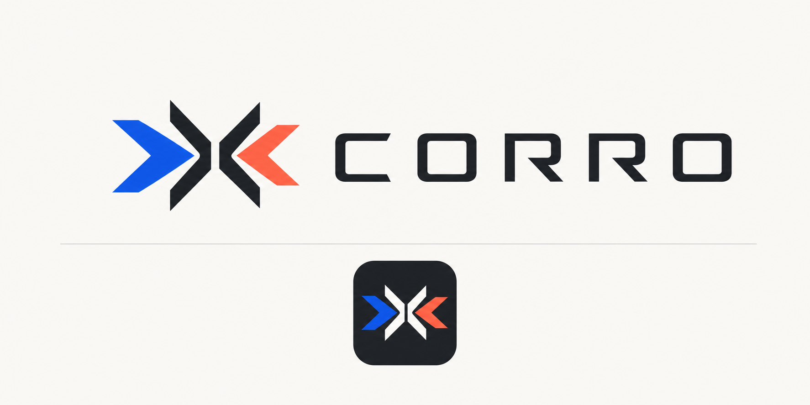
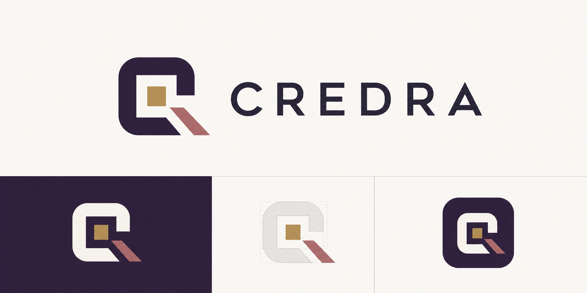

Review set
Nine landing-page directions, each tied to its own identity concept.
The pages below use the saved logo boards as the visual source of truth. The goal is comparison: different names, different palettes, different layouts, and different enterprise investigation postures.
Evrin
Compact invented-name route with warm black, bone, moss, and electric lime fragments.
Open Evrin mockupClaimBound
Claim review and source support expressed through a knot, citation line, teal, navy, and brass.
Open ClaimBound mockupSourceBound
Provenance-first command center inspired by the interlocking source-path mark.
Open SourceBound mockupVeriCord
A technical verification route with cord geometry, indigo, ice blue, and a restrained red signal.
Open VeriCord mockupAverra
Editorial, institutional, and report-led with oxblood, parchment, sage, and serif authority.
Open Averra mockup
Corro
Fast corroboration and signal convergence in cobalt, coral, off-white, and graphite.
Open Corro mockup
Credra
Premium credibility and record intelligence built around aubergine, gold, ivory, and rose.
Open Credra mockupPraeva
Strategic intelligence with a forward aperture, black ink, ivory, acid yellow, and steel blue.
Open Praeva mockupVestrae
Layered, quiet, premium intelligence using midnight green, pearl, muted lilac, and copper.
Open Vestrae mockup